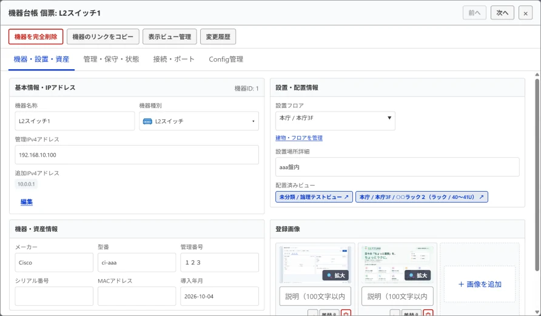
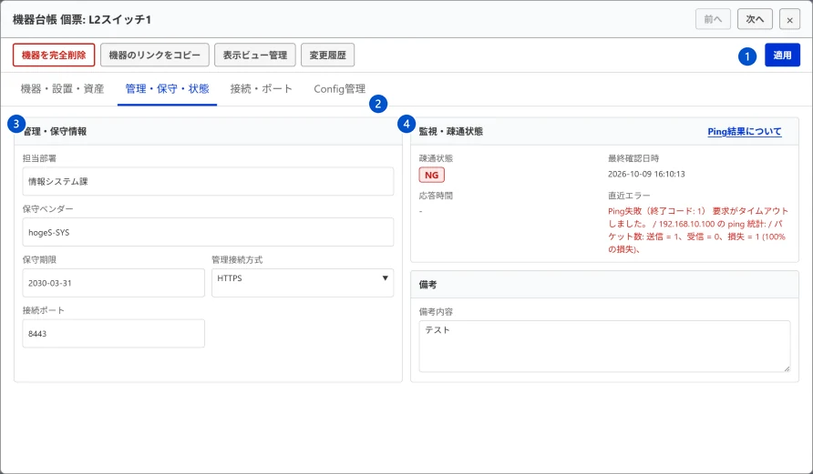
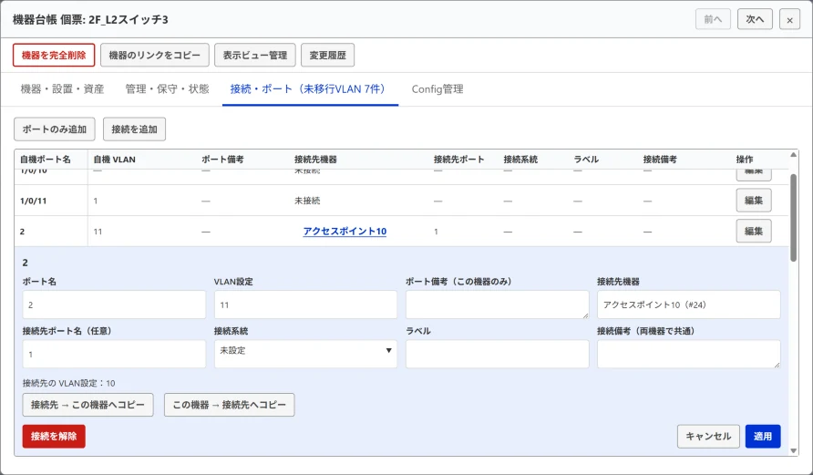
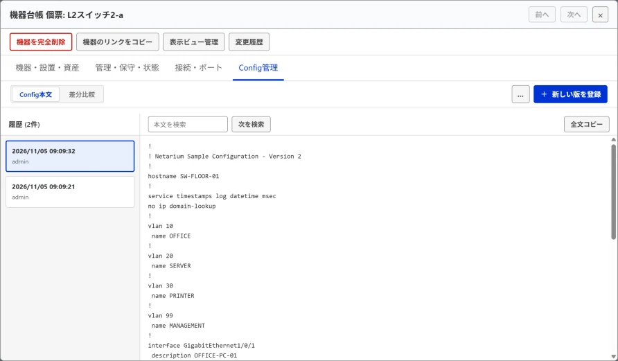
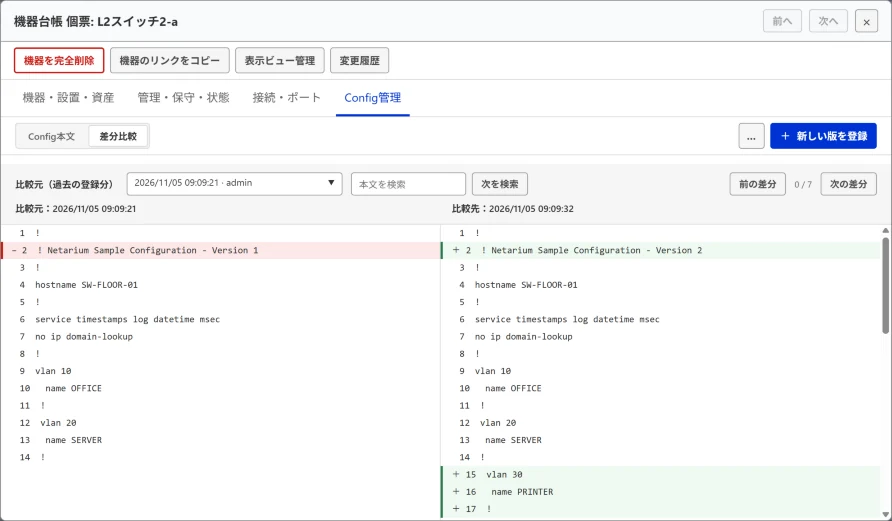
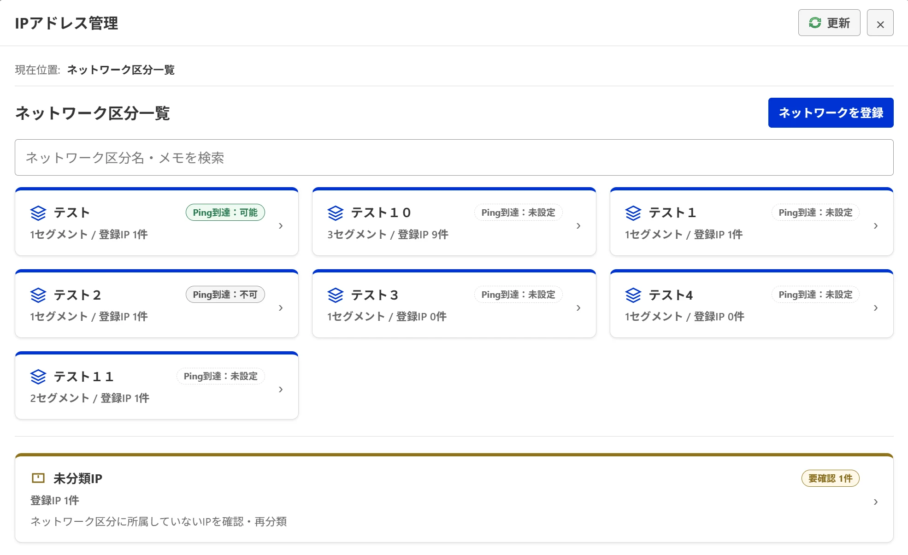
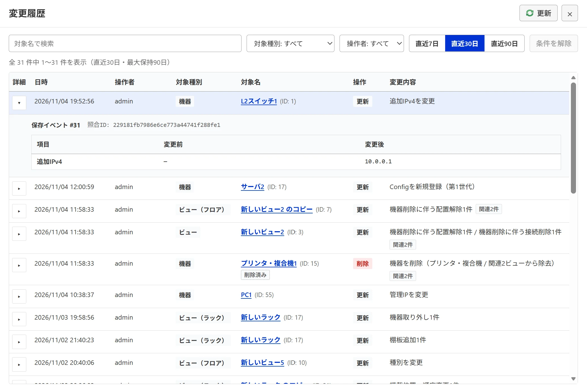
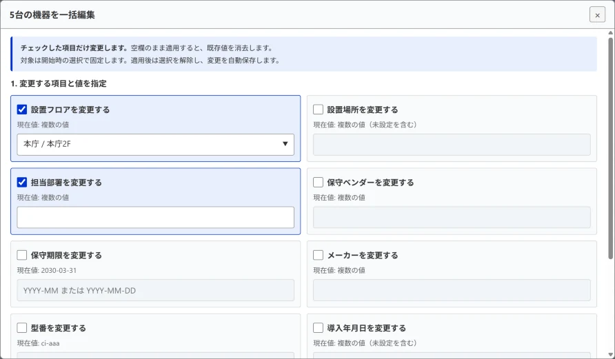
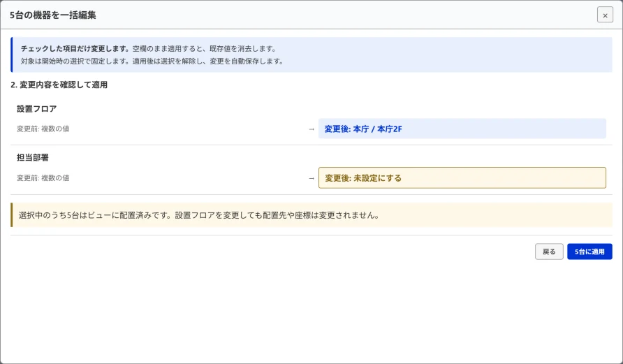

機器・台帳の操作ガイド
右プロパティパネル、機器個票（基本・保守・ポート/VLAN・Config管理）、機器台帳、IPアドレス管理、変更履歴、Ping疎通確認、一括編集の手順を説明します。
機器情報の編集と登録画像
選択モードでキャンバス上の機器をクリックすると右パネルが開き、5つの分類で機器情報を確認・編集できます。
- 右パネルで対象の見出し（「基本情報」「設置情報」「機器・資産情報」「管理・保守情報」「補足・状態」）を開いて入力します。
- パネル下部の「適用」を押すと入力が検証され、自動保存されます。
- 機器画像（管理者のみ）: 「機器・資産情報」の登録画像枠（1機器最大3枚）から「＋ 画像を追加」でPNGまたはJPEG（10MiB以下、各辺4,000px以下）を登録できます。画像の並べ替え・削除は即時反映されます。
アップロードした画像は長辺2,048px以下へ縮小し、EXIFメタデータを除去して保存します。原本は保持しません。
機器個票の編集と複数IP
機器台帳で「詳細」を押すか、キャンバス上の機器をダブルクリックすると機器個票が開きます。個票は「機器・設置・資産」、「管理・保守・状態」、「接続・ポート」、「Config管理」（管理者のみ）の4タブ構成です。




- 設置フロア管理: 管理者は設置フロア欄の「建物・フロアを管理」から階層管理画面を開けます（未適用入力がある場合は保存・破棄・継続の確認が表示されます）。
- 旧所属情報の表示: 設置フロアが未分類で旧施設・旧フロアの原文が残っている場合だけ、読み取り専用で表示します（設置フロア設定後は表示しません）。
複数IPアドレスの追加・変更・削除
管理IPv4に加えて、サービス用やVIPなどの追加IPv4アドレスを登録できます。
- 「機器・設置・資産」タブの「追加IPv4アドレス」欄で「編集」（未登録時は「IPアドレスを追加」）を押します。
- IPv4アドレスと用途ラベル（任意）を入力し、「IPアドレスを追加」で行を増やします（削除は行右端のゴミ箱アイコン）。
- 「閉じる」で戻り、上部の「適用」を押して自動保存します。
| IP重複の条件 | 保存時の判定と動作 |
|---|---|
| 同一機器内で同じIP | 登録エラーとなり保存できません。 |
| 同一ネットワーク区分内の別機器で新規重複 | 登録拒否となり保存できません。 |
| 異なるネットワーク区分間の同じIP | 独立したアドレス空間として登録・保存できます。 |
| 未分類を含む新規重複 | 警告が表示され、明示的な確認後に保存できます。 |
| 既存データの重複 | 既存の重複状態は原則として保持されます。 |
保存判定とPingスキップの区別: 保存済みであっても、同一IPが複数の「到達可能」区分や未分類にまたがり通信先を特定できない場合は、安全のためPing送信を自動スキップします。
個票から機器を完全削除する（管理者のみ）
- 対象機器の個票を開き、上部操作バーの「機器を完全削除」を押します。
- 未適用の入力がある場合は、保存するか取り消すかを確認画面で選びます（保存失敗・競合時は削除へ進みません）。
- 確認画面で対象機器名を確認して実行すると、全ビューの配置と関連する接続も削除します。
ポート・接続・VLANの管理（「接続・ポート」タブ）
機器個票の「接続・ポート」タブでは、登録済みポートを1ポート1行で管理し、ポート単位でVLANを設定できます。


- 「未接続」の意味: Netarium上に接続が未登録であることを示します（実機のリンクダウンではありません）。
- 「ポート未指定の接続」: 自機側ポートを割り当てていない接続は下部の別枠に表示され、後からポートを割り当てられます。
- 接続先個票への移動: 接続先の機器名を押すと、ビューを切り替えずに相手の個票を開けます。
ポートの登録と接続の編集（管理者のみ）
- 「ポートのみ追加」で未接続ポートだけを登録するか、「接続を追加」で新しい接続を作成します（自機ポート名は空欄可）。既存ポートに接続を割り当てる場合は行の「編集」を押します。
- 「接続先機器」で機器名やIPアドレスを入力して相手を選び、「接続先ポート名（任意）」に既存候補または新しいポート名を入力します（未登録名を指定すると適用時に相手側のポートも自動登録します）。
- 「VLAN設定」（1行・200文字以内、例：
access 10、trunk allowed 10,20 / native 99）と「ポート備考」を入力します。消去するときは空欄にして保存します。 - 接続系統・ラベル・接続備考を確認し、フォーム内の「適用」を押して保存します。
VLANの正本: VLAN設定は「ポート」に保存されます（IPアドレス管理のセグメントVLANとは別概念です）。ポート未指定の接続ではVLAN設定を入力できないため、先にポート名を指定してください。
対向ポートへVLAN設定をコピーする
両端のポートが保存済みの場合、編集フォーム内の「接続先の VLAN設定」で相手の値を確認できます。
- 管理者は「接続先 → この機器へコピー」または「この機器 → 接続先へコピー」で、選んだ方向へ即時保存できます（自動コピーは行いません）。
- コピー先に別の値がある場合は「VLAN設定の上書き確認」が開くため、両端の機器名・ポート名・設定値を比較してから実行してください。未適用入力がある間は先に適用またはキャンセルが必要です。
未移行VLANの再設定と、接続解除・ポート削除の違い
- 未移行VLANの解消: 旧版から引き継いだ未移行VLANは接続行に表示します（自動転記はしません）。行の「編集」でポート名と「VLAN設定」を入力して「適用」を押します。VLAN値を編集したときだけでなく、VLAN設定済みのポートを新たに割り当てて保存に成功したときも旧記録は消えます（ポート名だけを変えてVLANが空欄のままなら残ります）。必要な旧値は適用前に確認してください。ポート側を変えずに記録だけ消す場合は「未移行設定削除」を押します。
- 接続解除とポート削除: 「接続を解除」は共通接続と未移行VLANだけを削除し、両端のポートとポートVLANは残ります。ポート自体を消すときは、未接続の行で「ポートを削除」を選びます。
機器 Config の手動保管（管理者のみ）
保存済み機器の個票にある「Config管理」タブで、設定テキストの世代管理（最大5世代、1版256KiB以内）と行単位の差分比較を行えます。




- 機器個票を開き、「Config管理」タブを選びます（上部の「前へ」「次へ」で台帳順または読み込み済み機器を連続確認できます）。
- 「+ 新しい版を登録」で設定テキストの貼り付け、またはUTF-8テキストファイルの読み込みを行い、メモを添えて登録します。
- 「差分比較」タブで比較元の版を選ぶと、「前の差分」「次の差分」で変更箇所へ移動できます。
- 不要な版を消す場合は、タブ内右上の「…」メニューから「履歴を削除」を選んで対象版を削除します（機器本体は消えません）。
秘密情報のマスキング: 登録前にパスワード、事前共有鍵、SNMPコミュニティ名などを必ず削除・マスキングしてください。実機からの自動取得や適用は行いません。
機器へ管理接続する
右パネルや個票の「機器へ接続」から、管理画面や外部SSHクライアントを起動できます。
- HTTP / HTTPS: 登録された管理IPとポートのURLを新しいタブで開きます。
- SSH: 端末のOSに関連付けられた外部SSHクライアント（
ssh://）を起動します（Windowsでの設定手順は画面内の「？接続方法」で確認できます）。
機器台帳の概要
上部バーの「台帳」から開きます。登録済み全機器の検索、表示列プリセットの切り替え、複数条件による絞り込み、CSV出力・取込、一括編集、選択機器へのPing実行を行えます。
台帳の表示項目とCSV連携
台帳右上の「表示項目」ドロップダウンで列プリセットを切り替えられます。
- 標準: 名称、種別、主IP、追加IP、設置フロア、監視状態、操作。
- 設置・資産: 設置場所、メーカー、型番、管理番号、シリアル番号、導入年月など。
- ネットワーク・管理: MACアドレス、管理接続方式、ポート、担当部署、保守ベンダー、保守期限。
- すべて: すべての台帳項目を展開。
管理者は「種別」セルをクリックしてインライン変更し、「変更を適用」で一括保存できます。設置フロアは建物／フロアの選択欄から変更でき、ビューへの配置操作では自動変更されません。
CSV出力・取込と設置フロアの扱い
- フォーマット: 固定20列（UTF-8）です。
facility・floor列には設置フロアの建物名・フロア名を出力します（未設定時は空欄）。 - 取込の所属判定: 既存の建物名・フロア名に一意に一致する場合だけ設置フロアを設定します。空欄・片側のみ・未一致・曖昧な行では既存所属を保持します（CSVで建物・フロアの新規作成や所属解除はできません）。
- 取込結果の確認: 「CSV取込仕様」は検証結果の表示時に自動で折りたたまれます（再展開可）。エラーが1件もない状態で「取込を実行」を押すと保存され、検索・絞り込み・並び順を保ったまま台帳へ戻ります。
- 別の保存処理が実行中の場合は、処理が終わってから同じ検証結果で取込を再試行できます。再検証を求められた場合は、取込内容を確認し直してください。
台帳の複数条件による絞り込み
「表示ビュー」「設置建物」「設置フロア」「状態」「種別」「IP登録」「配置状態」「保守期限」の8項目で絞り込めます。同名でもIDごとに区別して選びます。
- 項目内（OR条件）: 各フィルターで複数項目にチェックを入れると、いずれかに一致する機器を表示します。
- 項目間（AND条件）: 異なるフィルター間および検索欄とは、すべてを満たす機器に絞り込みます。
- チェック選択の保持: 「表示ビュー」を切り替えたときは行のチェック選択が解除されますが、その他の絞り込みでは画面外の選択も維持します。Pingや一括編集の前に対象件数を確認してください。
保守期限の見通しと台帳への移動
ダッシュボードの「資産・保守」タブ、または台帳の「保守期限」フィルターで保守終了時期を管理できます。
- 表示切替: 「年度別」（当年度から5年度分とそれ以降、年度開始月を変更可）と「残存期間別」を切り替えられます。設定は使用中のブラウザーに保存します。
- 判定基準: 年月のみ（
YYYY-MM）の期限は月末日として集計し、期限当日は「期限超過」に含めません。期限未登録と設定不要は分けて集計します。 - 台帳への遷移: 年度や残存期間の区分を押すと、保守管理の列構成・期限順で台帳が開きます。
IPアドレス管理（ネットワーク区分）
組織内のIPv4アドレス体系を「ネットワーク区分」と「セグメント（CIDR）」で管理します（閲覧者も参照可、編集は管理者のみ）。


- 上部バーの「管理」→「IPアドレス管理」を開きます。
- ネットワーク区分の登録: 「ネットワークを登録」で区分名（例：基幹系、庁内LAN）、メモ、Ping到達性（「到達可能」「到達不可」「未設定」）を設定します。
- セグメント（CIDR）の登録: 区分カードを開いて「セグメントを追加」からCIDRと用途（任意でセグメントメモ・VLAN情報）を登録します。
- 未分類IPの再分類: 画面下部の「未分類IP」から、セグメントに属していないIPを登録済みセグメントへ割り当てられます。
Ping到達性の注意: 「到達不可」は不要なPing送信をスキップするための運用宣言であり、サーバーOSのルーティングやVRFを自動変更するものではありません。
変更履歴の確認（管理者のみ）
機器・ビュー・接続・ラック・ポートなどの編集差分を最大90日間保持し、変更前後を確認できます。


- 上部バーの「管理」→「変更履歴」、または機器個票・ビュー管理の「変更履歴」ボタンから開きます。
- 期間（直近7日／30日／90日）、対象種別、操作者、対象名で絞り込みます。
- 行をクリックすると、変更項目ごとの差分と同一保存イベントの関連対象を展開します。設置フロアの差分は記録時点の建物名／フロア名を保持します。
ログの区別: 変更履歴は構成データの編集差分を記録します。認証の監査ログや「Config管理」のテキスト世代とは独立しています。
チェックした機器のPing（管理者のみ）
台帳でチェックした機器に対し、サーバーからICMP Pingを一括送信して疎通状態を確認します。
- 台帳のチェックボックスで対象機器を選びます。
- 台帳右上の「Ping（件数）」を押します。実行中は台帳内に対象件数と経過時間を表示します。
- 完了後、「結果を表示」からOK／NG／タイムアウト／スキップ／未確認の一覧とCSVダウンロードを利用できます。
NGとOKの意味: PingのNGは機器の停止を断定するものではありません（ICMP応答無効化やファイアウォールでもNGになります）。OKもICMP応答の確認であり、HTTP/SSHサービスの稼働を保証しません。
選択した機器の一括編集（管理者のみ）
台帳で選んだ複数の機器に対し、設置フロア・設置場所・担当部署・保守期限・管理接続などの属性をまとめて変更します。




- 台帳で1台以上の機器をチェックし、上部の「一括編集」を押します。
- 変更する項目のチェックボックスをオンにし、新しい値を入力します（設置フロアは一覧から選び、「未設定」で所属を解除します。チェックがオフの項目は変更しません）。
- 「変更内容を確認」で変更前後の差分を確認し、「○台に適用」を押して確定します。
設置フロアを変更しても、すでに配置されているビュー上の位置や座標は変わりません。